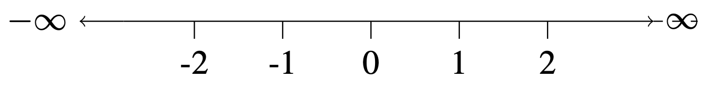
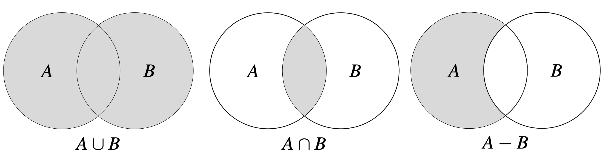
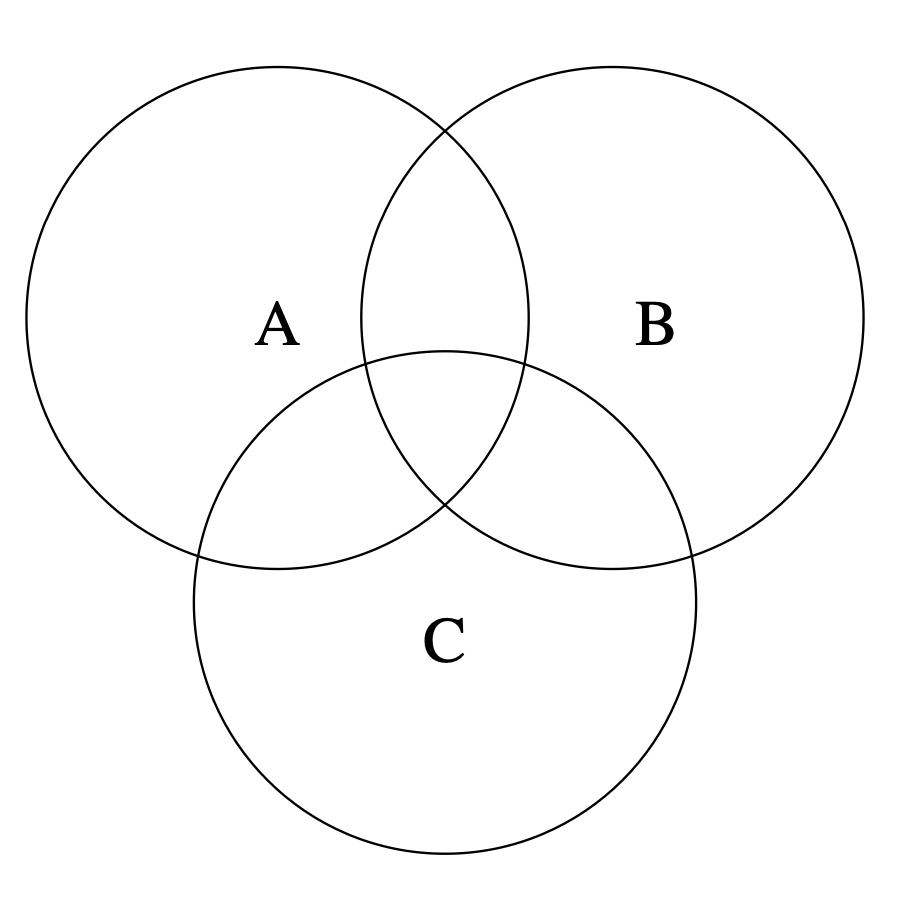
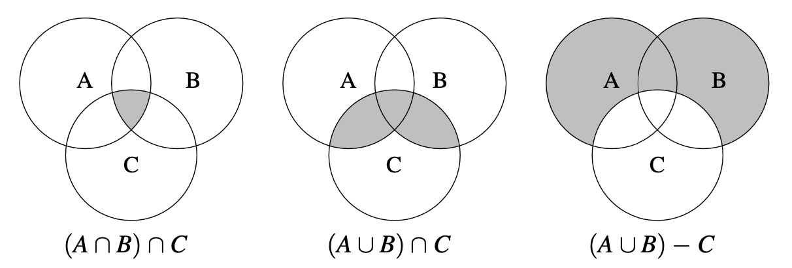

2.1 Set Theory
Sets
A set is a collection of things.
The things are called elements of a set.
\[ Colors = \{Red, Blue, Green\} \]
\[ Numbers = \{1,2,3\} \]
Sets can be finite or infinite.
\[ Some\ Even\ Integers = \{2,4,6\} \]
\[ All\ Even\ Integers = \{..., -4, -2, 0, 2, 4, ...\} \]
The number of elements in a set is called the cardinality.
\[ |Colors| = 3 \]
Two sets are equal if they share exactly the same elements.
\[ A = \{2,4,6\}, B = \{4,2,6\}, C = \{4,2,7\} \]
\[ A = B \] \[ A \neq C \]
To express that \(2\) is an element of \(A\), we denote:
\[ 2 \in A \] \[ \text{2 exists in A} \]
\[ 5 \notin A \] \[ \text{5 does not exist in A} \]
Some sets are so significant that we reserve special symbols for them:
\[ \emptyset = \{\} \quad \textbf{(empty set)} \]
\[ \mathbb{N} = \{1, 2, 3, ... \} \quad \textbf{(natural numbers)} \]
\[ \mathbb{Z} = \{..., -2, -1, 0, 1, 2, ... \} \quad \textbf{(integers)} \]
\[ \mathbb{R} = \{..., -0.22,...,0,...,1,..., \pi, ... \} \quad \textbf{(real numbers)} \]
We visualize \(\mathbb{R}\) as an infinitely long number line.

Set-Builder Notation
A special notation called set-builder notation is used to describe sets that are too big or complex to list between braces.
\[ All\ Even\ Integers_{1} = \{..., -4, -2, 0, 2, 4, ...\} \]
\[ All\ Even\ Integers_{2} = \{2x: x \in \mathbb{Z} \} \]
\[ \text{The set of all numbers of the form } 2x \text{ such that } x \in \mathbb{Z} \]
\[ All\ Even\ Integers_{1} = All\ Even\ Integers_{2} \]
Exercise
Write the following sets in set-builder notation:
- \(\{ 2, 4, 8, 16, 32, 64, ... \}\)
- \(\{ 0, 1, 4, 9, 16, 25, 36, ... \}\)
- \(\{ 3, 4, 5, 6, 7, 8 \}\)
- \(\{ 2^x: x \in \mathbb{N} \}\)
- \(\{ x^2: x \in \mathbb{Z} \}\)
- \(\{ x \in \mathbb{Z}: 3 \le x \le 8 \}\)
Subsets
Suppose \(A\) and \(B\) are sets.
If every element of \(A\) is also an element of \(B\), then we say \(A\) is a subset of \(B\), denoted \(A \subseteq B\).
We write \(A \not\subseteq B\) if \(A\) is not a subset of \(B\), that is, if it is not true that every element of \(A\) is also an element of \(B\). Thus \(A \not\subseteq B\) means that there is at least one element of \(A\) that is not an element of \(B\).
\[ \mathbb{N} \subseteq \mathbb{Z} \subseteq \mathbb{R} \]
\[ A = \{1,2\}, B = \{2,3,4\} \] \[ A \not\subseteq B \]
Exercise
List all the subsets of the following sets:
- \(\{1,2,3\}\)
- \(\{1,\{2,3\}\}\)
- \(\{\mathbb{N}, \mathbb{Z}, \mathbb{R}\}\)
- \(\{\}, \{1\}, \{2\}, \{3\}, \{1,2\}, \{1,3\}, \{2,3\}, \{1,2,3\}\)
- \(\{\}, \{1\}, \{\{2,3\}\}, \{1,\{2,3\}\}\)
- \(\{\}, \{\mathbb{N}\}, \{\mathbb{Z}\}, \{\mathbb{R}\}, \{\mathbb{N},\mathbb{Z}\}, \{\mathbb{N},\mathbb{R}\}, \{\mathbb{Z},\mathbb{R}\}, \{\mathbb{N},\mathbb{Z},\mathbb{R}\}\)
Union, Intersection, and Difference
Suppose \(A\) and \(B\) are sets.
A union of \(A\) and \(B\) is the set: \[ A \cup B = \{x: x \in A \text{ or } x \in B \} \]
A intersection of \(A\) and \(B\) is the set: \[ A \cap B = \{x: x \in A \text{ and } x \in B \} \]
A difference of \(A\) and \(B\) is the set: \[ A - B = \{x: x \in A \text{ and } x \notin B \} \]

Exercise
Shade in the region matching the expression:
- \((A \cap B) \cap C\)
- \((A \cup B) \cap C\)
- \((A \cup B) - C\)


Complements
Suppose \(A\) is a set.
A universal set is a larger set that encompasses other sets.
The complement of \(A\), denoted \(\bar{A}\), is the set \(\bar{A} = U - A\).
\[ P = \{2, 3, 5, 7, ...\} \quad \textbf{(prime numbers)} \]
\[ \bar{P} = \mathbb{N} - P = \{1, 4, 6, ...\} \]
Exercise
Find \(\bar{A}\):
\[ A = \{1,2,3\}, U = \{0,1,2,3,4,5\} \]
\[ \bar{A} = \{0, 4, 5\} \]